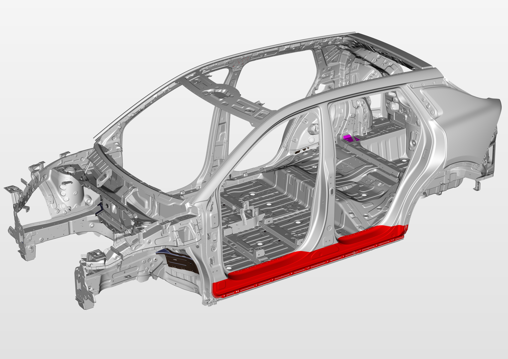
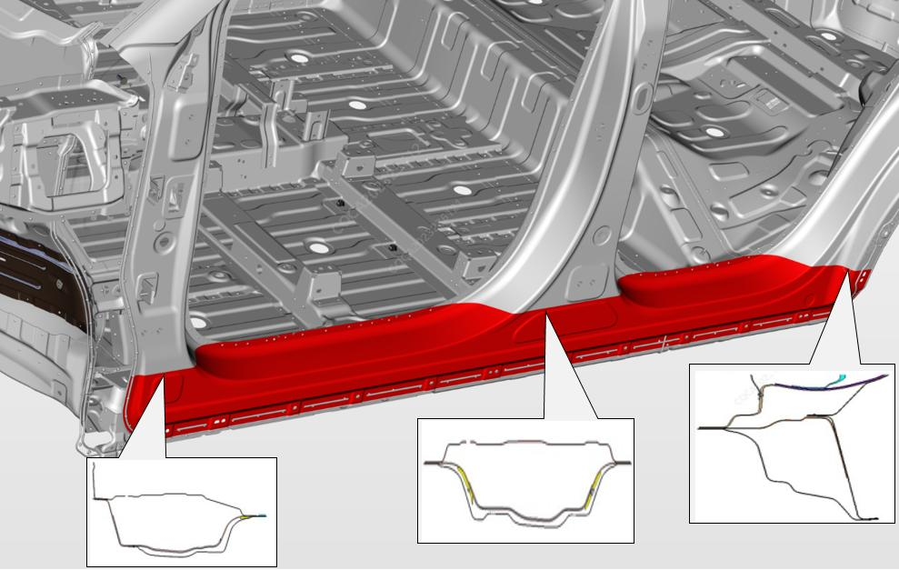
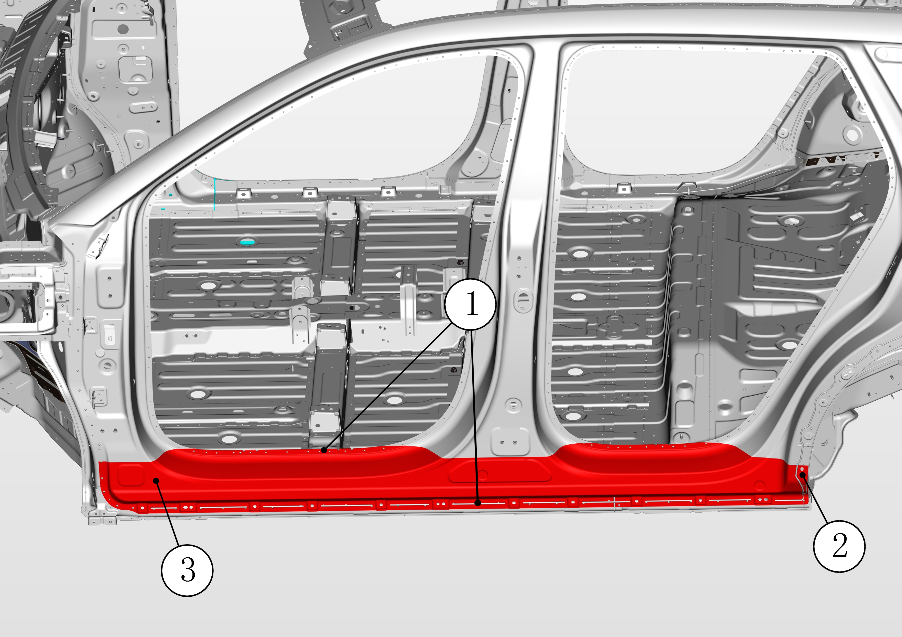
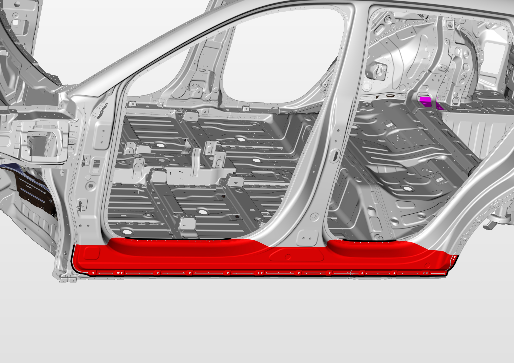
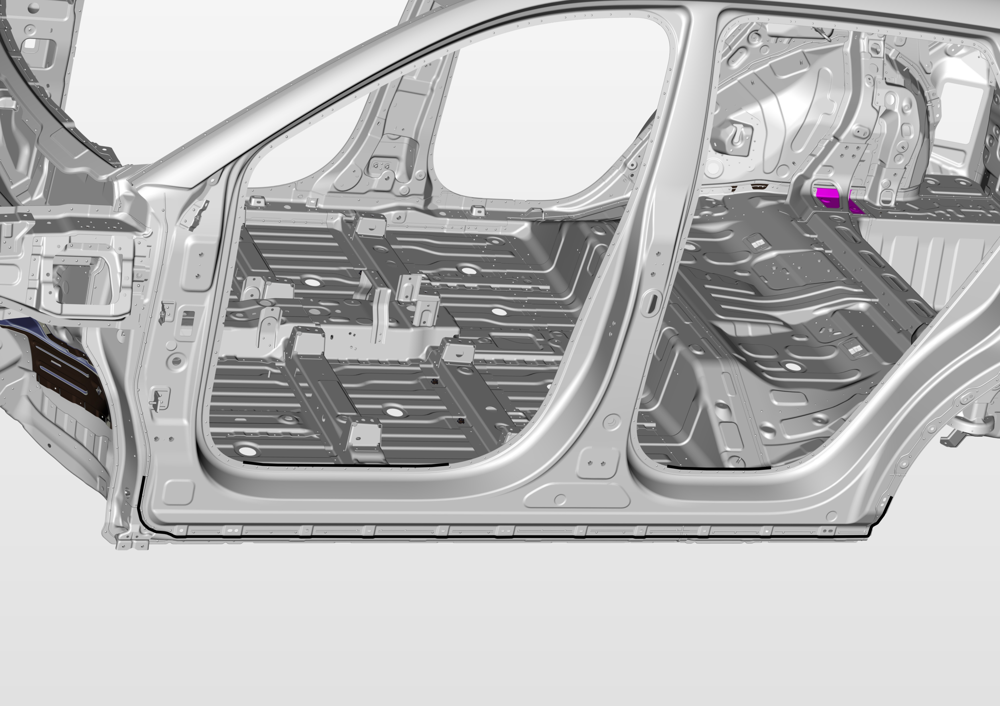
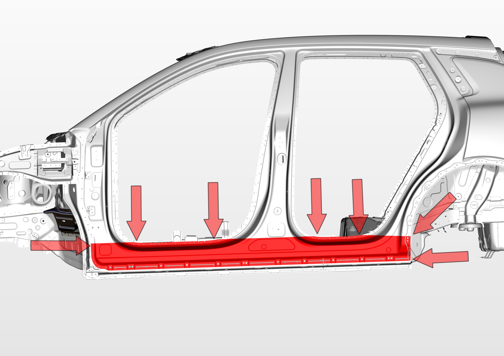
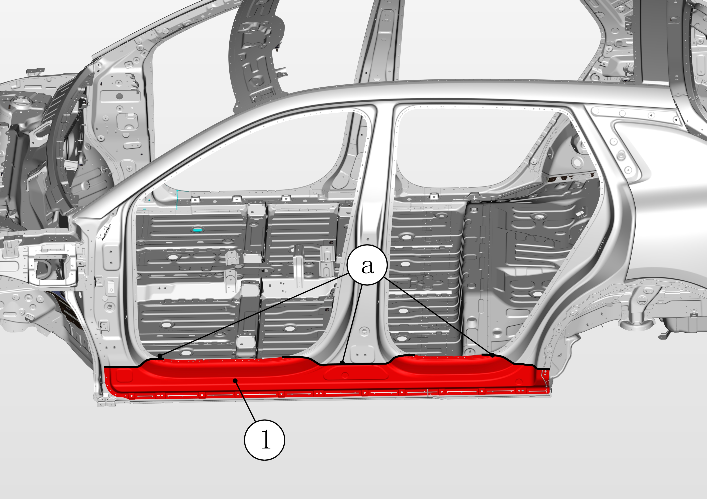
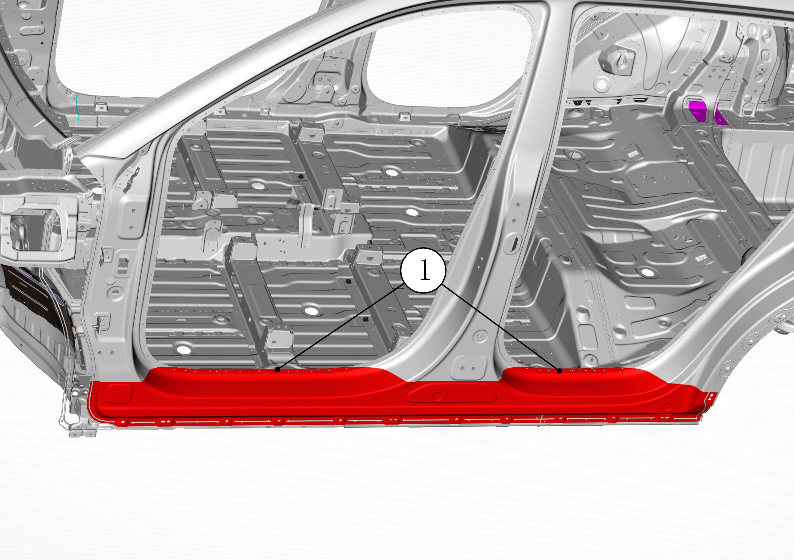
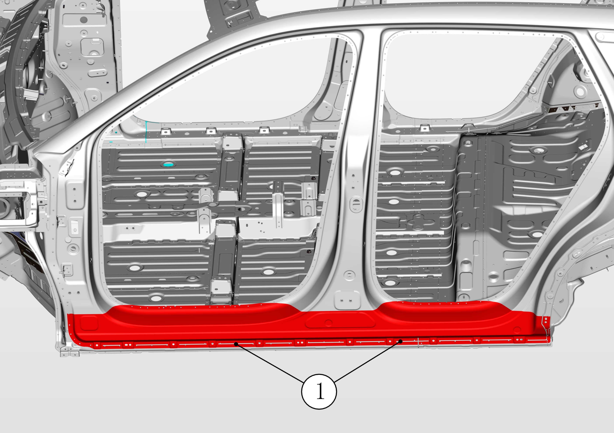
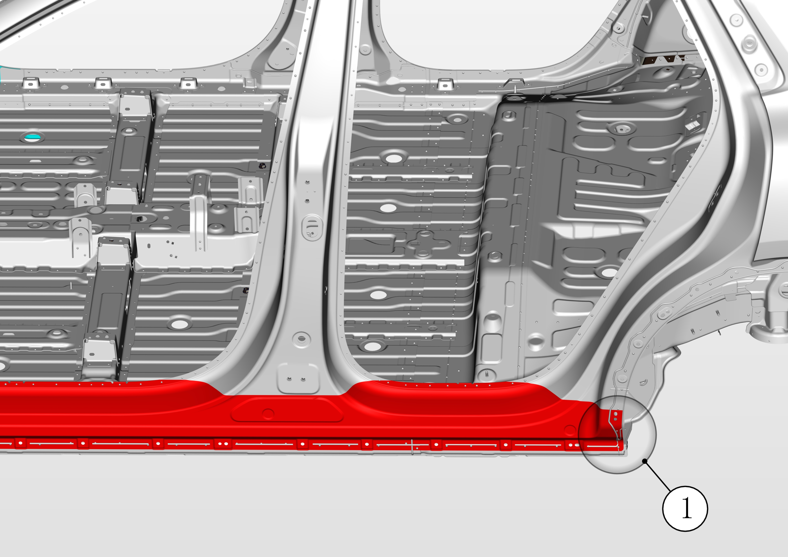

Снять оригинальную деталь:
PHEV: внешняя панель боковины (левая) с лючком зарядного гнезда;

Измерить размеры геометрии кузова для правки, проверить соединительные элементы на предмет Деформация;
Использовать телескопическую измерительную линейку в качестве измерительного инструмента.
Снять оригинальную деталь:
Выполнить резку по линии реза, указанной на рисунке, удалить обрезанные кромки;
Оператор может ориентироваться по поперечным сечениям ключевых зон для регулировки положения и глубины реза;
Не допускается повреждение внутренних усилителей.
PHEV: внешняя панель боковины (левая) с лючком зарядного гнезда;

Удалить герметик в зоне сварки и в зоне завальцовки до обнажения сварочных точек;
С помощью подходящего инструмента высверлить сварные точки ①, показанные на рисунке;

С помощью зубила и молотка разъединить сварные точки ① и завальцовку внешней панели боковины ②, демонтировать нижнюю внешнюю панель боковины ③.
Подготовка новой детали:
Обрезать внешнюю панель боковины на верстаке, оставив поперечное сечение достаточной ширины для установки новой детали;
Удалить антикоррозионное покрытие с кромок внешней панели боковины;
Нанести грунтовочный состав для сварки в местах сварки внешней панели боковины.

Сварка:
Очистить зону работ от сварочного грата, удалить антикоррозионное покрытие в зоне соединения кузова;
Нанести грунтовочный состав для сварки в зоне работ;

Зафиксировать обрезанную деталь новой внешней панели боковины на кузове с помощью самофиксирующихся зажимов;
Отрегулировать установочное положение;

Установить нижнюю внешнюю панель боковины ① на автомобиль, зафиксировать самозажимными фиксаторами;

Проверить состояние выравнивания и сварные швы по периметру кромок;
Проверить, перекрывается ли компонент с кромкой автомобиля, a: примерно 50 mm;
Подрезать кромки листового металла, удалить излишки для формирования идеального сварочного зазора;
С помощью аппарата точечной сварки сварить зону ①, указанную на рисунке;

Зачистить сварочную поверхность, удалить сварочный грат;
Нанести антикоррозионный состав на новую зону сварки;
С помощью сварочного аппарата MIG сварить зону ①, указанную на рисунке;

Зачистить сварочную поверхность, удалить сварочный грат;
Нанести антикоррозионный состав на новую зону сварки;
С помощью сварочного аппарата MIG сварить шов ①, указанный на рисунке;
Зачистить сварочную поверхность, удалить сварочный грат;
Нанести антикоррозионный состав на новую зону сварки;
С помощью молотка завальцевать кромку внешней панели боковины ① до прилегания к тыльной стороне внутренней панели, следить за тем, чтобы видимая поверхность внешней панели боковины не была деформирована;

Нанести герметик на зону соединения кузова.